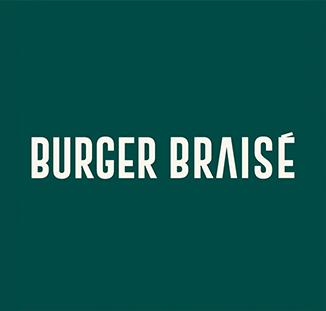

Burger Braisé
Pour un restaurant spécialisé dans les burgers cuits à la braise, j'ai réalisé la charte graphique, le logo, les menus TV ainsi que le site web.
Compétences utilisées
- Création graphique: Photoshop, Illustrator
- WEB: site vitrine
